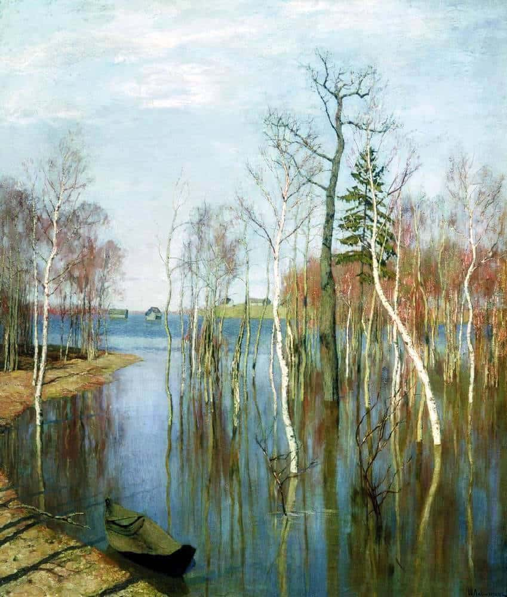
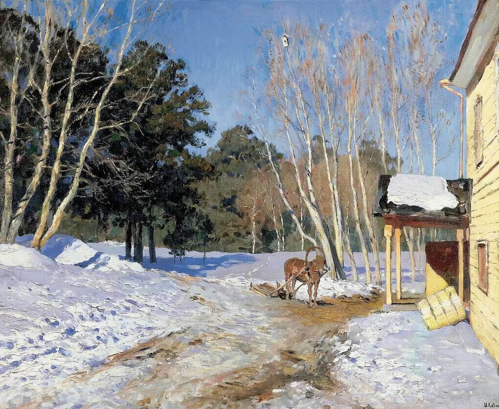

22 июля 1900 года в возрасте 39 лет ушел из жизни русский художник Исаак Ильич Левитан. Талантливый человек и исключительная личность. Уязвимый, чувствительный к критике и склонный болезненно реагировать на нее. Безмерно уважая людей, он переживал, когда не получал должной реакции в ответ. И как следствие – разочарование в людях, в дружбе и одиночестве. И болезни. Неслучайно, что за годы жизни не сложилась семья, не родились дети. Весь свой талант, любовь, высокие чувства выплеснулись на холсты, где величественные пейзажи передали настроения художника и его чаянья. Представляем 10 самых знаменитых картин Левитана с фото, описаниями и названиями.